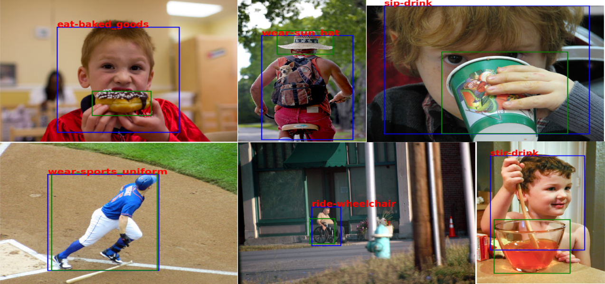
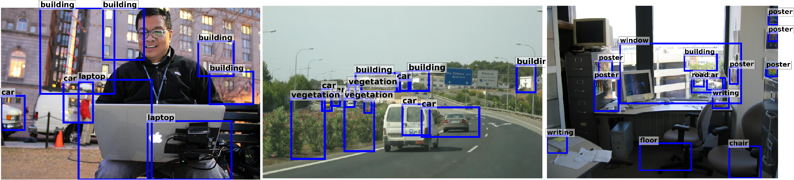
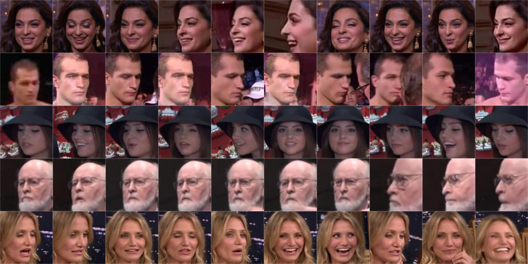

|
Projects
(click on images to go to project pages)
Human-Object Interaction Detection

Semi-supervised Learning
Internship at Amazon Rekognition, Seattle, WA (May 2018-August 2018)
Zero-shot Object Detection
Internship at SRI International, Princeton, NJ (May 2017-August 2017)

UMDFaces
A large scale dataset for face recognition and verification. It includes over 360,000 annotated still images, 22,000 videos, and over 3.7 million annotated video frames.

Comparison of Supervised and Unsupervised Neural Networks
Course Project for CMSC828L (Deep Learning), UMD College Park (August 2016-December 2016)
Compared the networks learnt using Generative Adversarial Networks [1] and compared against supervised networks
for classification. [report]
Real-time (30 fps) Face Detection Using YOLO (You Only Look Once)
Trained a real-time (30 fps) face detector using the You Only Look Once method [2] to find faces in about 15
million images.
Detecting handles of kitchen appliances using Faster R-CNN
Course Project for CMSC828K (Preception for Robotics), UMD College Park (January 2016-April 2016)
Obtained annotations for data using Amazon Mechanical Turks and trained Faster R-CNN [3] models for detection of
handles of common kitchen appliances.
Estimating Number of People in Images of Very High Density Crowds
Master's thesis, IIT Kanpur (May 2014-June 2015)
The task was to find the number of people in images of crowds taken at concerts, rallies, demonstrations, sports
events, religious processions and ceremonies, fairs, etc. Exploited multiple sources - head counts, Fourier
analysis, GLCM features, and interest point based counting. Used deformable part models (DPM) for detecting heads
and estimating their count and confidence. Implemented Fourier analysis based counting by finding local maxima in
reconstructed gradient images of crowds. Trained a support vector regression model on interest points (SIFT
features) to obtain an estimate of the count. Obtained the final count by fusing counts from different sources
using support vector regression. Paper based on the work.
References
[1] Radford, Alec, Luke Metz, and Soumith Chintala. “Unsupervised representation learning with deep
convolutional generative adversarial networks.” arXiv preprint arXiv:1511.06434 (2015).
[2] Redmon, Joseph, Santosh Divvala, Ross Girshick, and Ali Farhadi. “You only look once: Unified, real-time
object detection.” arXiv preprint arXiv:1506.02640 (2015).
[3] Ren, Shaoqing, Kaiming He, Ross Girshick, and Jian Sun. “Faster R-CNN: Towards real-time object detection
with region proposal networks.” In Advances in neural information processing systems, pp. 91-99. 2015.
|